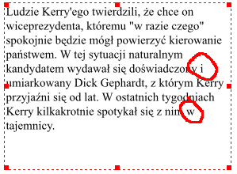
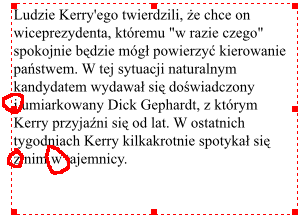
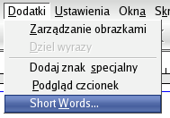
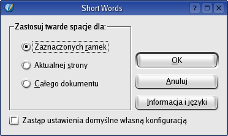

Copyright © 2004 Maciej Hański, Petr Vaněk, Łukasz Jernaś
Permission is granted to copy, distribute and/or modify this document under the terms of the GNU Free Documentation License, Version 1.2 or any later version published by the Free Software Foundation; with no Invariant Sections, no Front-Cover Texts, and no Back-Cover Texts. A copy of the license is included in the section entitled "GNU Free Documentation License".
Jest to instrukcja obsługi wtyczki Short Words dla Scribusa, wolnego i dostępnego za darmo programu do DTP. Aktualne informacje o Short Words można znaleźć pod adresem http://www.yarpen.cz/scribus-vlna.
Czym jest Scribus, można dowiedzieć się na stronach internetowych tego programu. Aktualne informacje w języku polskim na temat Scribusa można znaleźć na stronie Macieja Hańskiego.
Niezwykle przyjazna i aktywna grupa ludzi wspierających rozwój Scribusa chętnie pomaga w rozwiązywaniu problemów za pośrednictwem listy dyskusyjnej oraz kanału IRC #scribus na serwerze freeenode.net.
Zgodnie z regułami obowiązującymi w polskiej typografii nie powinno zostawiać się na końcu wiersza jednozgłoskowych spójników a ,i ,o ,w ,u ,z ,A ,E ,I ,O ,W ,U ,Z. Wyjątek stanowić mogą spójniki w wierszach nie przekraczających 25 znaków (więcej informacji na stronie www.typografia.ogme.pl). Z problemem tym można się uporać, wstawiając pomiędzy jednozgłoskowym spójnikiem i następnym słowem tzw. twardą spację, co spowoduje przeniesienie obu słów do następnego wiersza.
Scribus umożliwia co prawda ręczne wstawianie twardych spacji (kombinacja klawiszy CTRL+SPACE), jednak przy dużych objętościach tekstu jest to metoda zbyt czasochłonna.
Petr Vaněk napisał moduł do Scribusa wzorujący się na używanym w Czechach programie vlna dla
systemu TeX, który automatyzuje tę monotonną pracę. Początkowo wtyczka ta obsługiwała tylko język czeski, ale od
wersji 1.2 możliwe jest już dołączenie obsługi dowolnego języka za pośrednictwem odpowiednio spreparowanego pliku
konfiguracyjnego.
Na poniższym zrzucie ekranowym widoczne są tzw. "zawieszone spójniki", pozostawione na końcach wierszy:
Przykładowy polski tekst przed użyciem wtyczki
Po zastąpieniu przez wtyczkę Short Words zwykłych spacji tzw. twardymi spacjami, spójniki zostały przeniesione do następnego wiersza:
Przykładowy tekst po użyciu wtyczki
Po instalacji wtyczki w menu Dodatki pojawi się nowa pozycja Short Words...:
Wywołanie programu
Wybierz z menu Dodatki>Short Words... Pojawi się okienko dialogowe, które pozwoli na wybór rodzaju operacji, którą program ma wykonać.
Okienko dialogowe Short Words
Dodaje twarde spacje w zaznaczonych ramkach tekstowych.
Dodaje twarde spacje we wszystkich ramkach tekstowych na aktualnej stronie dokumentu.
Dodaje twarde spacje w całym dokumencie
Zakreślenie tej opcji spowoduje, że uwzględnione zostaną tylko ustawienia zdefiniowane we własnym pliku konfiguracyjnym. Jeśli opcja pozostanie niezakreślona, ustawienia własne użytkownika zostaną dołączone do ustawień domyślnych.
Najprostszy sposób instalacji Short Words to sprawdzenie na stronie scribus.net, czy dostępny jest pakiet instalacyjny dla Twojej dystrybucji, np. Fedory, SuSE lub Gentoo.
Można również ściągnąć kod źródłowy wtyczki i zainstalować go za pomocą klasycznych trzech poleceń:
# ./configure
# make
$ make install
Dodatkowo w pierwszym poleceniu zdefinować można docelowy katalog, w którym zainstalowana zostanie wtyczka: ./configure --prefix=/katalog/gdzie/poprzednio/zainstalowano/scribusa. Domyślny katalog docelowy to: /usr/local, który również jest domyślnym katalogiem docelowym podczas instalacji Scribusa ze źródeł.
Instalacja przedstawiona w powyższym przykładzie powiedzie się, jeśli w systemie zainstalowane będą wymagane biblioteki.
Short Words dla Scribus dostarczany jest z domyślnym plikem konfiguracyjnym scribus-short-words.rc, który zazwyczaj znaleźć można w katalogu /usr/local/lib/scribus/plugins (rzeczywiste położenie tego pliku zależy od miejsca, w którym zainstalowany został Scribus). Konfiguracja jest łatwo zrozumiała, plik ten zawiera bowiem listę słów i skrótów dla poszczególnych języków, które należy poprzedzić albo po których należy dodać twardą spację. Pozycja spacji (przed lub po słowie) jest ważna, gdyż wskazuje ona wtyczce miejsce, w którym należy wstawić twardą spację. Każdy wiersz z listą słów musi zaczynać się od kodu języka, dla którego ta lista została zdefiniowana, np. en oznacza angielski, a cs język czeski:
# English stuff START here en=Dr. ,Dr ,Mr. ,Mr ,Mrs. ,Mrs ,Ms. ,Ms ,Prof. ,Prof ,Rev. ,Rev , en= Kg, kg, g, mg, oz, lb, cwt, km, Km, m, cm, mm, # Czech short words START here ## hanging conjunctions cs=K ,k ,S ,s ,V ,v ,Z ,z ,O ,o ,U ,u ,I ,i ,A , ## physics and math cs= kg, g, m, cm, mm, l, hl, s, %,
Jeśli chcesz zdefiniować własne słowa, np. aby dodać obsługę nowego języka, utwórz własny plik konfiguracyjny, skopiuj do niego wszystkie potrzebne ustawienia z domyślnego pliku konfiguracyjnego, dodaj swoje własne ustawienia, a na koniec zapisz plik pod nazwą scribus-short-words.rc w katalogu ~/.scribus. Jeśli chcesz używać wyłącznie własnego pliku konfiguracyjnego, wystarczy zakreślić opcję Zastąp ustawienia domyślne własną konfiguracją w okienku dialogowym wtyczki, w innym przypadku program dołączy ustawienia własne do ustawień domyślnych.
Autor wtyczki chętnie rozszerzy domyślny plik konfiguracyjny o brakujące ustawienia obowiązujące dla twojego języka, powiadom go o nich!
Short Words for Scribus Copyright 2003, 2004 Petr Vaněk, <petr@yarpen.cz>
This program is free software; you can redistribute it and/or modify it under the terms of the GNU General Public License as published by the Free Software Foundation; either version 2 of the License, or (at your option) any later version.
This program is distributed in the hope that it will be useful, but WITHOUT ANY WARRANTY; without even the implied warranty of MERCHANTABILITY or FITNESS FOR A PARTICULAR PURPOSE. See the GNU General Public License for more details.
You should have received a copy of the GNU General Public License along with this program; if not, write to the Free Software Foundation, Inc., 51 Franklin Street, Fifth Floor, Boston, MA 02110-1301, USA.